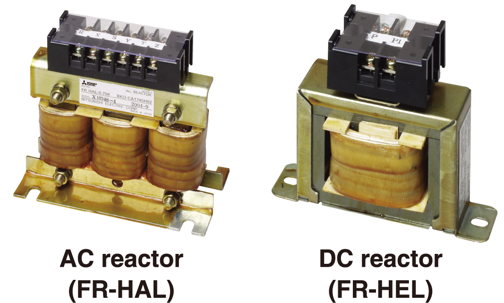
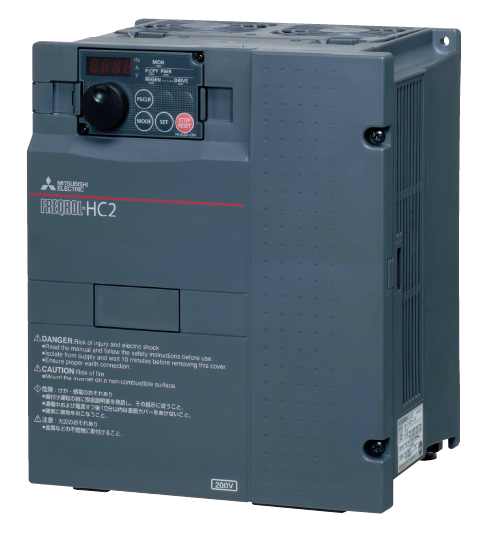

Inverters-FREQROL-F Series -FREQROL-F800- Kesesuaian dengan Lingkungan

Penekanan Arus Harmonik Keluar dan EMI
- Arus harmonisa dapat memengaruhi pasokan daya secara negatif. Untuk menekan arus harmonisa tersebut, tersedia reaktor AC kompak yang meningkatkan faktor daya (FR-HAL) dan reaktor DC (FR-HEL). (Untuk inverter 75K atau lebih tinggi, selalu sambungkan reaktor DC. Pilih reaktor DC sesuai dengan kapasitas motor yang digunakan.)

- Dengan memasang konektor filter EMC ke posisi ON atau OFF, filter EMC internal dapat diatur aktif/nonaktif*1*2. Saat diaktifkan, inverter mematuhi Petunjuk EMC (EN61800-3/Kategori Lingkungan ke-2 C3*3) dengan sendirinya.
- *1Mengaktifkan filter EMC akan meningkatkan arus bocor.
- *2Choke mode umum sisi input, yang terpasang pada inverter 55K atau lebih rendah, selalu diaktifkan terlepas dari pengaturan konektor ON/OFF filter EMC.
- *3Lihat Panduan Pemasangan EMC untuk spesifikasi yang diperlukan.
| Capacitive filter | Common mode choke | DC reactor | |
|---|---|---|---|
| 55K or lower | Standard (built-in) | Standard (built-in) | Option (sold separately) |
| 75K or higher | Standard (built-in) | Option (sold separately) | Option (sold separately) |
- Inverter seri F800 55 kW atau lebih rendah dilengkapi dengan filter kapasitif (kapasitor) dan common mode choke bawaan. Dengan memasang reaktor DC opsional (FR-HEL), inverter dapat memenuhi Spesifikasi Standar Arsitektur (Instalasi Listrik) dan Spesifikasi Standar Arsitektur (Instalasi Mesin) yang diawasi oleh Kementerian Pertanahan, Infrastruktur, Transportasi, dan Pariwisata Jepang. (Untuk inverter seri F800 75 kW atau lebih tinggi, siapkan common mode choke (filter derau saluran) dan reaktor DC.)
- Dengan konverter faktor daya tinggi (FR-HC2), inverter setara dengan rangkaian jembatan tiga fase eksitasi sendiri dalam "Pedoman Penekanan Harmonik untuk Konsumen Tertentu" di Jepang, dan mewujudkan koefisien konversi kapasitas setara K5=0. Untuk inverter 355 kW atau lebih tinggi, konverter dipisahkan. Oleh karena itu, ruang pemasangan dapat dihemat saat menghubungkan FR-HC2.

Terlindungi di Lingkungan Berbahaya
Inverter dengan lapisan papan sirkuit (IEC60721-3-3:1994 3C2/3S2) dan konduktor berlapis tersedia untuk meningkatkan ketahanan lingkungan. ("-60" atau "-06" ditempelkan di akhir nama model inverter.)
Kompatibilitas Global
- Mematuhi Petunjuk UL, cUL, dan EC (penandaan CE), dan Undang-Undang Gelombang Radio (Korea Selatan) (penandaan KC). Produk ini juga disertifikasi sesuai dengan Kesesuaian Eurasia (EAC).
- Inverter ini mematuhi Petunjuk RoHS UE (Pembatasan Penggunaan Zat Berbahaya Tertentu dalam Peralatan Listrik dan Elektronik), ramah bagi manusia dan lingkungan.
Untuk rincian model yang sesuai dengan standar global,
hubungi kantor penjualan setempat Anda.